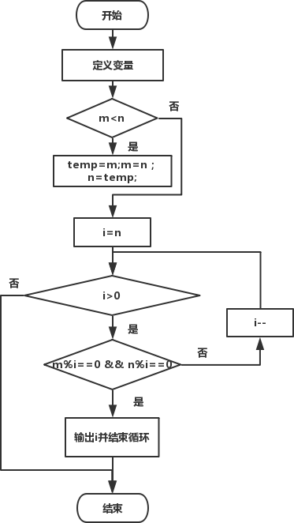

首页 > 编程笔记
C语言求最大公约数（详解版）
问题描述
求任意两个正整数的最大公约数（GCD）。问题分析
如果有一个自然数a能被自然数b整除，则称a为b的倍数，b为a的约数。几个自然数公有的约数，叫做这几个自然数的公约数。公约数中最大的一个公约数，称为这几个自然数的最大公约数。根据约数的定义可知，某个数的所有约数必不大于这个数本身，几个自然数的最大公约数必不大于其中任何一个数。要求任意两个正整数的最大公约数即求出一个不大于其中两者中的任何一个，但又能同时整除两个整数的最大自然数。
算法设计
思路有两种：第一种，采用穷举法按从小到大（初值为1，最大值为两个整数当中较小的数）的顺序将所有满足条件的公约数列出，输出其中最大的一个；第二种，按照从大（两个整数中较小的数）到小（到最小的整数1）的顺序求出第一个能同时整除两个整数的自然数，即为所求。下面对第二种思路进行详细说明。
两个数的最大公约数有可能是其中的小数，所以在按从大到小顺序找寻最大公约数时，循环变量i的初值从小数n开始依次递减，去寻找第一个能同时整除两整数的自然数，并将其输出。需要注意的是，虽然判定条件是i>0，但在找到第一个满足条件的i值后，循环没必要继续下去，如，25和15，最大公约数是5，对于后面的4、3、2、1没必要再去执行，但此时判定条件仍然成立，要结束循环只能借助break语句。
程序流程图：

下面是完整的代码：
#include<stdio.h>
int main()
{
int m, n, temp, i;
printf("Input m & n:");
scanf("%d%d", &m, &n);
if(m<n) /*比较大小，使得m中存储大数，n中存储小数*/
{ /*交换m和n的值*/
temp=m;
m=n;
n=temp;
}
for(i=n; i>0; i--) /*按照从大到小的顺序寻找满足条件的自然数*/
if(m%i==0 && n%i==0)
{/*输出满足条件的自然数并结束循环*/
printf("The GCD of %d and %d is: %d\n", m, n, i);
break;
}
return 0;
}
运行结果：Input m & n:100 125
The GCD of 125 and 100 is: 25
关注公众号「站长严长生」，在手机上阅读所有教程，随时随地都能学习。内含一款搜索神器，免费下载全网书籍和视频。

微信扫码关注公众号